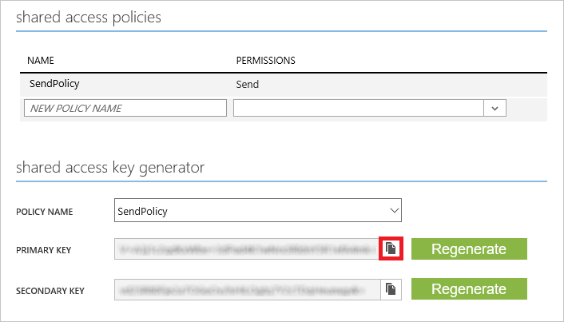
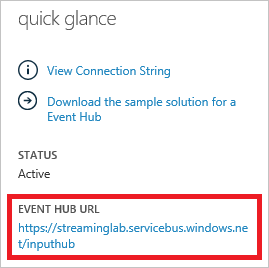
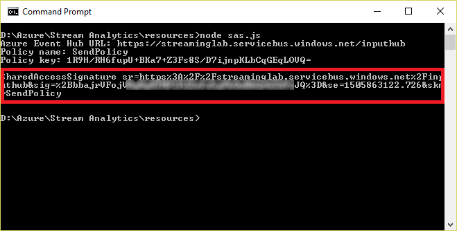
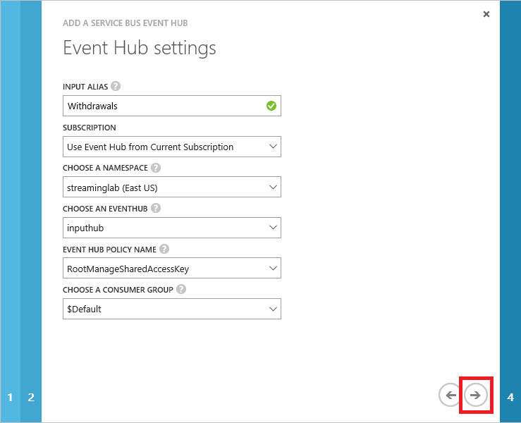
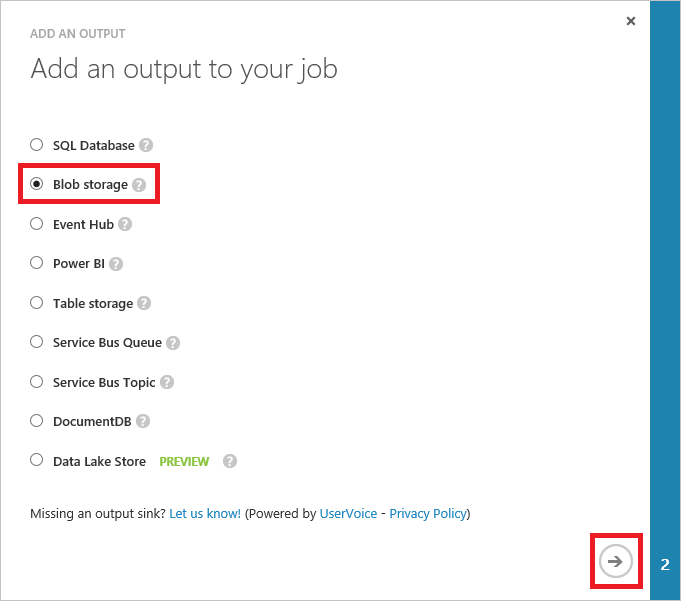
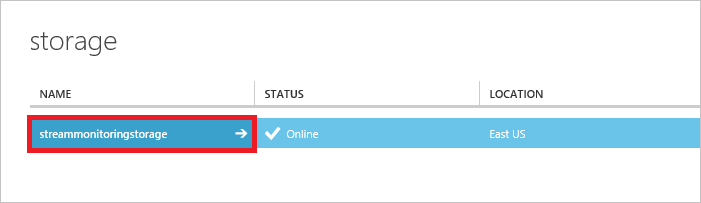
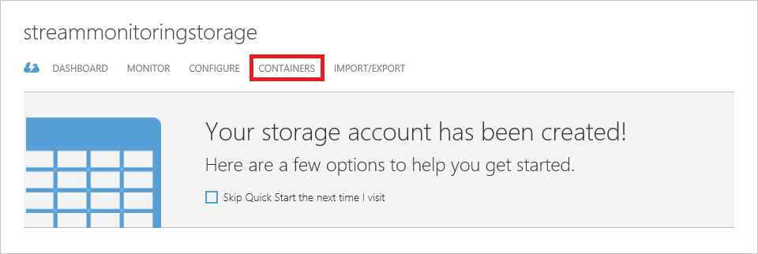

Internet-of-Things (IoT) with Azure Stream Analytics
Overview
Azure Stream Analytics is a cloud-based service for ingesting high-velocity data streaming from devices, sensors, applications, Web sites, and other data sources and analyzing that data in real time. It supports a SQL-like query language that works over dynamic data streams and makes analyzing constantly changing data no more difficult than performing queries on static data stored in traditional databases. With Azure Stream Analytics, you can set up jobs that analyze incoming data for anomalies or information of interest and record the results, present notifications on dashboards, or even fire off alerts to mobile devices. And all of it can be done at low cost and with a minimum of effort.
Scenarios for the application of real-time data analytics are legion and include fraud detection, identity-theft protection, optimizing the allocation of resources (think of an Uber-like transportation service that sends drivers to areas of increasing demand before that demand peaks), click-stream analysis on Web sites, shopping suggestions on retail-sales sites, and countless others. Having the ability to process data as it comes in rather than waiting until after it has been aggregated offers a competitive advantage to businesses that are agile enough to make adjustments on the fly.
In this lab, you'll create an Azure Stream Analytics job and use it to analyze data streaming in from simulated Internet of Things (IoT) devices. And you'll see how simple it is to monitor real-time data streams for information of significance to your research or business.
Objectives
In this hands-on lab, you will learn how to:
- Create an Azure event hub and use it as a Stream Analytics input
- Create a Stream Analytics job and test queries on sample data streams
- Run a Stream Analytics job and perform queries on live data streams
- Store Stream Analytics output in Azure storage blobs
Prerequisites
The following is required to complete this hands-on lab:
Exercises
This hands-on lab includes the following exercises:
Estimated time to complete this lab: 90 minutes.
Exercise1: Create an event hub
Azure Stream Analytics supports several types of input, including input from Azure blobs and input from Azure event hubs. Of the two, the latter is typically more interesting because in the IoT world, data is easily transmitted to Azure event hubs through field gateways (for devices that are not IP-capable) or cloud gateways (for devices that are IP-capable), and a single Azure event hub can handle millions of events per second transmitted from devices spread throughout the world.
In this exercise, you'll create an Azure event hub to provide input to Azure Stream Analytics and configure it to so that it can be accessed safely and securely by IoT devices and gateways.
-
Because the Azure Portal lacks full support for event hubs and Stream Analytics at the moment, you will work this lab using the Classic Portal. Go to https://manage.windowsazure.com to open the Classic Portal, and click Service Bus in the ribbon on the left. Then click CREATE A NEW NAMESPACE to create a new service-bus namespace. (If you have already created one or more namespaces, click + NEW in the lower-left corner of the page to create another one.)

Azure Service Bus
-
Type a namespace name into the NAMESPACE NAME box. The name must be unique within Azure, so you'll have to use something other than the name in the screen shot below. (A green check mark will appear in the box when the name you've entered is one that Azure will accept.) Set TYPE to EVENTHUB, and choose the region closest to you from the REGION drop-down. Then click the check mark in the lower-right corner of the dialog.

Creating a service-bus namespace
-
Click the + NEW button in the lower-left corner of the page. Click EVENT HUB, followed by QUICK CREATE. Type "inputhub" (without quotation marks) into the EVENT HUB NAME box (the name doesn't have to be unique within Azure). Select the same region you selected for the service-bus namespace in the previous step, and make sure the namespace you created in that step is selected in the NAMESPACE box. Then click CREATE A NEW EVENT HUB in the lower-right corner.

Creating an event hub
-
Wait for the event hub to be created. Then click the event hub name to display the event hub's dashboard.

Opening the event hub
-
Click CONFIGURE.

Configuring the event hub
-
In order to transmit events to the event hub from an application or device, you need to create a shared-access policy that includes Send permission. In the shared access policies section of the page, create a new policy by typing "SendPolicy" (without quotation marks) into the first text box and checking the Send box in the drop-down list under PERMISSIONS. Then click the Save button at the bottom of the page to save the new policy.

Creating a send policy
-
In the shared access key generator section that appears underneath shared access policies, click the Copy button to the right of the PRIMARY KEY box to copy the key to the clipboard. Then temporarily save the key by pasting it into your favorite text editor. You'll need this key in the next exercise.

Copying the primary key to the clipboard
-
Click DASHBOARD near the top of the page to return to the event hub's dashboard.

Returning to the dashboard
-
Under quick glance on the right side of the page, find EVENT HUB URL and copy the URL into your text editor. You'll need this URL, too, in the next exercise.

Getting the event hub's URL
You have created an event hub that can ingest events and be used as the source of input to a Stream Analytics job. You have also created a policy that allows holders of that policy to send events to the event hub. The next step is to generate a security token that can be used to authenticate calls to the event hub.
Exercise 2: Create a shared-access signature token
Applications, devices, or gateways can send events to event hubs using the Azure Event Hubs REST API. Each request transmitted via this API must include a valid shared-access signature (SAS) token in the HTTP Authorization header. SAS tokens are generated from the event hub's URL and the primary key for the policy used to communicate with the event hub — in this case, the policy named "SendPolicy" that you created in the previous exercise.
In this exercise, you will generate a shared-access signature token for the event hub created in Exercise 1 and copy it, along with the event hub URL, into a Node.js application that will be used to send events to the event hub in Exercise 3.
-
Neither the Classic Portal nor the Azure Portal currently provides an interface for generating SAS tokens. Therefore, you will generate a token using a Node.js app named sas.js provided with this lab. Begin by opening a command-line interface — for example, a terminal window or a Command Prompt window.
-
If Node.js isn't installed on your computer, go to https://nodejs.org and install it now.
You can find out whether Node.js is installed on your computer by executing a node -v command at the command prompt or in a terminal window. If Node.js is installed, you'll see the Node.js version number.
-
At the command prompt, navigate to this lab's "resources" directory. Then execute the following command:
node sas.js
It is very important that you run this command from the lab's "resources" directory, because that directory contains subdirectories that contain components required by sas.js.
-
When prompted, enter the event-hub URL you saved in Exercise 1, Step 9. Then press Enter.
-
When prompted, enter the name of the policy (SendPolicy) you created for the Azure event hub in Exercise 1, Step 6. Then press Enter.
-
When prompted, enter the policy key that you saved in Exercise 1, Step 7. Then press Enter.
-
The SAS token, which is highlighted with the red box below, will be output to the terminal window. Copy it to the clipboard.

Generating a SAS token
-
Find the file named eventgen.js in the "resources" directory of this lab and open it in your favorite text editor. Then find the section at the top of the file labeled "KEY VARS:"
///////////////// KEY VARS /////////////////
var sas = "Token";
var uri = "URL";
///////////////////////////////////////////
-
Replace Token with the SAS token you copied to the clipboard in Step 7. Important: The SAS token must not include line breaks. It needs to appear on this line as one contiguous string, and it must begin and end with quotation marks. In addition, the line must end with a semicolon.
-
Replace URL with the event-hub URL you saved in exercise 1, Step 9.
-
Save the modified eventgen.js file. The modified "KEY VARS" section should look something like this:
///////////////// KEY VARS /////////////////
var sas = "SharedAccessSignature sr=https%3A%2F%2Fstreaminglab.servicebus.windows.net%2Finputhub&sig=%2BbbajrVFxxxxxxxxxxFIFJ2vfx5yF6Ou0kGr6Sb9iJQ%3D&se=1505863122.726&skn=SendPolicy";
var uri = "https://streaminglab.servicebus.windows.net/inputhub";
///////////////////////////////////////////
Now that you've modified eventgen.js with information specific to your event hub, it's time to generate some events.
Exercise 3: Send events to the event hub
In this exercise, you will send events to the event hub you created in Exercise 1. To do that, you'll use Node.js to run eventgen.js, which in turn transmits secure requests to the event hub using the Azure Event Hubs REST API. eventgen.js generates events representing withdrawals from simulated ATM machines. Each event contains relevant information such as the card number used for the withdrawal, the time and amount of the withdrawal, and a unique identifier for the ATM machine used.
-
At the command prompt or in a terminal window, navigate to the "resources" directory of this lab if you aren't there already.
-
Now execute the following command:
node eventgen.js
It is very important that you run this command in the lab's "resources" directory, because the "resources" directory contains subdirectories that contain components required by eventgen.js.
You should see output similar to the following. Each line represents one event sent to the event hub, and events will probably roll by at a rate of about 2 to 3 per second. (Rates will vary depending on your connection speed.) Confirm that each request returns the HTTP status code 201. This indicates that the event hub received and accepted the request. If you receive any other status code — for example, 401 — then the SAS token probably isn't valid and you need to repeat Exercise 2.
[1000] Event sent (status code: 201)
[1001] Event sent (status code: 201)
[1002] Event sent (status code: 201)
[1003] Event sent (status code: 201)
[1004] Event sent (status code: 201)
[1005] Event sent (status code: 201)
[1006] Event sent (status code: 201)
[1007] Event sent (status code: 201)
[1008] Event sent (status code: 201)
[1009] Event sent (status code: 201)
-
After 10 to 20 events have been sent, press Ctrl+C (or whatever key combination your operating system supports for terminating an application running in a terminal window) to stop the flow of events. Leave the terminal window open so you can return to it later.
Now that events are flowing to your event hub, the next step is to create a Stream Analytics job and connect it to the event hub.
Exercise 4: Create a Stream Analytics job
In this exercise, you'll use the Classic Portal to create a Stream Analytics job and connect it to the event hub created in Exercise 1. You'll also capture the raw data being presented to Stream Analytics by the event hub and examine its structure.
-
Open the Classic Portal in your browser if it isn't already open. Click STREAM ANALYTICS in the ribbon on the left, and then click CREATE A NEW STREAM ANALYTICS JOB.

Azure Stream Analytics
-
Type "IoT-Analytics" (without quotation marks) into the JOB NAME box. Select the region nearest you in the REGION box. (It is important to select the same region here that you selected for the event hub in Exercise 1, because you're not charged for data that moves within a data center, but you are charged for data that moves between data centers. In addition, locating services that talk to each other in the same data center reduces latency.) Under REGIONAL MONITORING STORAGE ACCOUNT, either specify the name of a new storage account, or select an existing storage account if the portal presents you with that option.
If you choose to create a new storage account, recall that storage-account names can be 3 to 24 characters in length, can only contain numbers and lowercase letters, and must be unique within Azure. A green check mark next to the name indicates that it meets all these criteria. It is also advisable to locate the storage account in the same region as the Stream Analytics job to prevent the data from moving between data centers.
-
When you're done, click CREATE STREAM ANALYTICS JOB in the lower-right corner.

Creating a Stream Analytics job
-
After a few moments, the Stream Analytics job will appear in the portal. Wait until the job has been created, and then click it.

The new Stream Analytics job
-
Click INPUTS near the top of the page.

IoT-Analytics page
-
Click ADD AN INPUT.

Adding an input
-
Make sure Data stream is selected, and then click the right-arrow in the lower-right corner of the dialog.

Specifying an input type
-
Make sure Event Hub is selected, and then click the right-arrow.

Specifying a data-stream type
IoT hubs are a relatively recent addition to Azure. Their primary purpose is to enable two-way communications between hubs and IoT devices, and to allow devices that communicate with them to be registered. You chose Event Hub because you don't need the added functionality that IoT hubs provide. In addition, IoT hubs are still in preview and therefore are subject to change.
-
Enter "Withdrawals" (without quotation marks) as a friendly alias for the input in the INPUT ALIAS box. In the CHOOSE A NAMESPACE and CHOOSE AN EVENTHUB boxes, select the namespace and event hub that you created in Exercise 1. Leave EVENT HUB POLICY NAME set to RootManageSharedAccessKey (that's a default policy that's created automatically when you create an event hub; it grants permission to manage the event hub, send events, and receive events) and CHOOSE A CONSUMER GROUP set to $Default. Then click the right-arrow in the lower-right corner.

Specifying event-hub settings
-
Make sure JSON is selected under EVENT SERIALIZATION FORMAT (the Node.js application that sends events to the event hub sends JSON data), and UTF8 is selected under ENCODING. Then click the check mark in the lower-right corner to finish adding the input.

Specifying a serialization format
-
After a few moments, the new input — "Withdrawals" — appears in the list of inputs for the Stream Analytics job. Go back to the command prompt or terminal window you left open at the end of the previous exercise and run eventgen.js again by executing the following command:
node eventgen.js
-
Allow eventgen.js to run for a minute or two. Then press Ctrl+C (or the equivalent) to stop it, and return to the portal open in your browser.
-
Click the SAMPLE DATA button at the bottom of the page to sample data from the event hub.

Sampling input data
-
Click the check mark in the lower-right corner of the ensuing dialog to sample any data transmitted to the event hub in the last 10 minutes. (This is why you ran eventgen.js again: to make sure there is data to sample, even if more than 10 minutes have elapsed since you completed Exercise 3.)

Specifying start time and duration
-
Wait until sampling has completed. Then click the button in the lower-right corner of the page that indicates the operation has completed.

Data sampling completed
-
When a ribbon appears that says "Successfully sampled data from Withdrawals," click the Details button on the right.

Data sampling succeeded
-
Click Click here to download the data sampled from the event hub. Save the JSON file that is downloaded to a location where you can easily find it. Then click OK to dismiss the ribbon.

Downloading sample data
-
Open the JSON file you downloaded in your favorite text editor and take a moment to examine its contents. How many rows (events) are represented in the sample data? What is the structure of each row — that is, what fields does each row contain?
If you find the output hard to digest since there are no line breaks, try pasting it into an online JSON viewer such as the one at http://jsonviewer.stack.hu/ or https://jsonformatter.curiousconcept.com/.
You have connected a Stream Analytics job to an event hub and demonstrated that data is passed from one to the other. You have also examined the structure of that data. The next step is to do something with it — specifically, to bring the power of Azure Stream Analytics to bear on the data.
Exercise 5: Prepare queries and test with sample data
Now that your job is set up, there's much more you can do with Stream Analytics than simply view the raw data presented to it. The whole point of Stream Analytics is being able to perform queries on the data, even though the data is dynamic rather than static. In this exercise, you'll use the Stream Analytics Query Language to query a sample data set for potentially fraudulent ATM transactions. It is always a good idea to test your queries against sample data before deploying them against live data streams, because with sample data, you can verify that a known set of inputs produces the expected set of outputs.
To flag potentially fraudulent withdrawals from ATMs, you will query for transactions performed with the same ATM card at different ATM machines within a specified time window (60 seconds). In real life, you would probably use a larger time window and perhaps even factor in the distance between ATM machines. However, a narrower time window is useful in a lab environment because it allows you to perform meaningful experiments in minutes rather than hours.
-
Begin by returning to the Stream Analytics job in the portal and clicking QUERY at the top of the page.

Navigating to the Query page
-
Enter the following query into the query field, and then click the Test button.
SELECT * FROM Withdrawals
Where did the name "Withdrawals" come from? That's the alias you assigned to the event-hub input in the previous exercise. If you named it differently, you'll need to replace "Withdrawals" with the alias you used.

Testing a query
-
In the ensuing dialog, click BROWSE FOR FILE. Select the file named Withdrawals.json provided in the "resources" directory of this lab. Then OK the selection by clicking the check mark in the dialog's lower-right corner.
The reason you're using a file provided for you (rather than the one you captured in the previous exercise) is to make sure everyone who is doing this exercise gets the same results. eventgen.js uses JavaScript's Math.random() function to randomize results, and Math.random() does not produce repeatable sequences of pseudo-random numbers.

Loading test data
-
Scroll down the page and confirm that you see the output pictured below. The test data contains 607 rows. Each row has fields named TRANSACTIONID, TRANSACTIONTIME, DEVICEID, CARDNUMBER, and AMOUNT. DEVICEID is the ID of the ATM machine at which the transaction took place. AMOUNT is the amount of cash withdrawn from the ATM.

Output from SELECT *
-
Suppose you only wanted to view transactions for amounts between 200 and 300, inclusive. Furthermore, suppose you wanted to clean up the output by assigning your own column names and excluding the TRANSACTIONID column. Enter the following query and click the Rerun button to test it. (Rerun executes the query against the test data already loaded. If you wanted to load a different test file, you would click the Test button again.)
SELECT TransactionTime as [Time of Transaction],
DeviceID as [ATM],
CardNumber as [Card Number],
Amount as [Amount]
FROM Withdrawals
WHERE Amount >= 200 and Amount <= 300
-
Scroll down and confirm that the query generated the following output:

Customizing the output
-
One of the key features of the Stream Analytics Query Language is its ability to group results using windows of time whose length you specify. To demonstrate, enter the following query to count the number of transactions taking place each minute and click Rerun to execute it:
SELECT System.Timestamp as [Time Ending],
COUNT(*) AS [Number of Transactions]
FROM Withdrawals TIMESTAMP BY TransactionTime
GROUP BY TumblingWindow(n, 1)
TIMESTAMP BY is an important element of the Stream Analytics Query Language. If it was omitted from the query above, you would be querying for the number of transactions that arrived at the event hub each minute rather than the number of transactions that occurred in each 1-minute interval. TIMESTAMP BY allows you to specify a field in the input stream as the event time.
-
Scroll down and confirm that you see the output below:

Number of transactions per minute
-
Now it's time to query the test data for potentially fraudulent transactions — transactions involving the same ATM card but different ATM machines that take place within 60 seconds of each other. This is the query you will use in the next exercise against a live data stream.
Enter the following query and click Rerun to execute it:
SELECT W1.CardNumber as [Card Number],
W1.DeviceID as [ATM 1], W2.DeviceID as [ATM 2],
W1.TransactionTime as [Time 1], W2.TransactionTime as [Time 2]
FROM Withdrawals W1 TIMESTAMP BY TransactionTime
JOIN Withdrawals W2 TIMESTAMP BY TransactionTime
ON W1.CardNumber = W2.CardNumber
AND DATEDIFF(ss, W1, W2) BETWEEN 0 and 60
WHERE W1.DeviceID != W2.DeviceID
-
This time the output should contain just three rows, each representing two transactions performed with one ATM card at two different locations within 60 seconds of each other:

Potentially fraudulent transactions
-
Click the SAVE button at the bottom of the page to save the query. Then click YES when asked to confirm.

Saving the query
With the query now formulated, tested against a set of sample data, and saved, it's time to deploy it against a live data stream to produce a running record of potentially fraudulent transactions.
Exercise 6: Analyze a live data stream
Being able to run your queries and see the results in the portal is great for testing, but when a query is deployed against a live data stream, you will most likely want to capture the results in a persistent data store. Azure Stream Analytics supports a variety of output types, including blobs, Azure SQL databases, and even event hubs. Imagine a scenario in which a Stream Analytics job receives data from an event hub, transforms it, and sends the results to another event hub, which itself serves as the input to another Stream Analytics job. Jobs can be chained this way to create rich analytic paths. Another reason for using event hubs for output is that software can subscribe to events from event hubs, enabling developers to build custom applications that show Stream Analytics output in near real time.
In this exercise, you'll configure the Stream Analytics job to store output in blobs. Then you'll run the job against a live data stream and check the results by inspecting the blob that was generated.
-
Return to the Stream Analytics job in your browser and click OUTPUTS.

Navigating to the Outputs page
-
Click ADD AN OUTPUT to add an output to the job.

Adding an output
-
Select Blob storage as the output type. Then click the right-arrow in the lower-right corner of the dialog.

Specifying the output type
-
Type "Flagged-Withdrawals" (without quotation marks) into the OUTPUT ALIAS box. Select the storage account you want to use for the output blobs. Make sure Create a new container is selected to create a new blob container to hold the output, and type "iot-analytics" (without quotation marks) into the CONTAINER box. Type "withdrawals/{date}/{time}" into the PATH PREFIX PATTERN box. Then click the right-arrow in the lower-right corner.
Each time you run a Stream Analytics job configured with a blob output, a new blob with a unique name is created. The purpose of PATH PREFIX PATTERN is to allow you to embed meaningful information, such as the time and date the job was executed, in the blob's name.

Specifying blob storage settings
-
Make sure EVENT SERIALIZATION FORMAT, ENCODING, and FORMAT are set as shown below, and then finish up by clicking the check mark in the lower-right corner.

Specifying serialization settings
-
Click the START button at the bottom of the page to start the Stream Analytics job.

Starting the Stream Analytics job
-
Make sure JOB START TIME is selected, and then click the check mark. JOB START TIME means that the job will begin sampling output from the input source the moment the job is started. Event hubs retain events for a specified period of time (the default is 1 day), so if you wanted, you could select CUSTOM TIME and start sampling output before the job's start time.

Starting the output
-
Return to the terminal window in which you ran eventgen.js and execute the following command to run it again:
node eventgen.js
-
Wait 5 to 10 minutes to give the job time to start and eventgen.js time to transmit several hundred events. Then terminate eventgen.js and return to the browser window.
If you'd like, you can open several terminal windows and run eventgen.js in each one to increase the volume of events.
-
Click the STOP button at the bottom of the page to stop the Stream Analytics job. Then click YES when asked if you're sure you want to stop the job.

Stopping the Stream Analytics job
-
Wait until the job is stopped, which might take a minute or two. Then click the Storage button in the ribbon on the left to go the portal's Storage page.

Viewing storage accounts
-
Click the storage account that you designated to receive output from the Stream Analytics job.

Opening the storage account
-
Click CONTAINERS to view the storage containers associated with this account.

Viewing containers
-
Click iot-analytics to view the contents of the container you created when you added an output to the Stream Analytics job.

Opening the container
-
Click the DOWNLOAD button at the bottom of the page to download the blob containing the output from the Stream Analytics job.
If there are no blobs in the container, wait a few minutes and check the container again. Sometimes a blob created by a Stream Analytics job appears immediately, and at other times, it may take 10 minutes or more to show up.

Downloading the blob containing the job output
-
Open the downloaded JSON file in your favorite text editor. Each object (row) in the output represents a potentially fraudulent transaction. Note that the number of rows and the content of each row will vary from machine to machine as well as from one run to another.

JSON job output
Currently, the data output from your Stream Analytics job is stored in a blob. In real life, you might prefer to view the output in a more convenient form, such as in a chart that's updated in real time. You could accomplish that by writing an application that monitors the blob and charts the data, or, better yet, by directing the output to an event hub and writing an application that subscribes to events from the event hub.
Microsoft recognizes that not everyone wants to write applications, and has provided an alternative in the form of Microsoft Power BI. With Power BI, you can create dashboards that render output from Stream Analytics jobs without writing any code. For more information, refer to Stream Analytics & Power BI: A real-time analytics dashboard for streaming data.
Summary
Azure Stream Analytics is a powerful tool for analyzing live data streams from IoT devices or anything else that's capable of transmitting data. In this lab, you got a first-hand look at Stream Analytics as well as Azure event hubs. Among other things, you learned how to:
- Create an Azure event hub and use it as a Stream Analytics input
- Create a shared-access signature that allows event hubs to be called securely using REST APIs
- Create a Stream Analytics job and test queries on sample data streams
- Run a Stream Analytics job and perform queries on live data streams
- Create a rule (query) that detects anomalies in streaming data
- Use that rule to record anomalies in Azure blobs
One drawback to hard-coding rules into Stream Analytics is that rules don't "learn" from the data streams, which can lead to false positives in anomaly detection. If this concerns you, read the article entitled Anomaly Detection – Using Machine Learning to Detect Abnormalities in Time Series Data in the Azure team's Machine Learning blog. In it, they present an anomaly detection service accessible through a REST API that uses Azure Machine Learning to learn from the data presented to it. Imagine combining the power of Stream Analytics to extract information from real-time data streams with the power of Azure Machine Learning to learn from that information and refine the analytics on the fly. This is precisely the type of solution that Microsoft Azure empowers you to build!
Copyright 2016 Microsoft Corporation. All rights reserved. Except where otherwise noted, these materials are licensed under the terms of the Apache License, Version 2.0. You may use it according to the license as is most appropriate for your project on a case-by-case basis. The terms of this license can be found in http://www.apache.org/licenses/LICENSE-2.0.